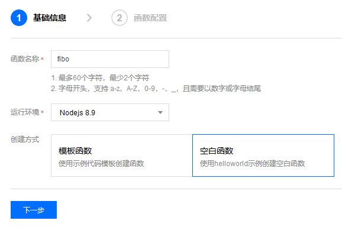

- 00 开篇词 云计算，这是开发者最好的时代.md.html
- 01 区域和可用区：欢迎来到云端数据中心.md.html
- 02 云虚拟机（一）：云端“攒机”，有哪些容易忽视的要点？.md.html
- 03 云虚拟机（二）：眼花缭乱的虚拟机型号，我该如何选择？.md.html
- 04 云虚拟机（三）：老板要求省省省，有哪些妙招？.md.html
- 05 云硬盘：云上IO到底给不给力？.md.html
- 06 云上虚拟网络：开合有度，编织无形之网.md.html
- 07 云端架构最佳实践：与故障同舞，与伸缩共生.md.html
- 08 云上运维：云端究竟需不需要运维？需要怎样的运维？.md.html
- 09 什么是PaaS？怎样深入理解和评估PaaS？.md.html
- 10 对象存储：看似简单的存储服务都有哪些玄机？.md.html
- 11 应用托管服务：Web应用怎样在云上安家？.md.html
- 12 云数据库：高歌猛进的数据库“新贵”.md.html
- 13 云上大数据：云计算遇上大数据，为什么堪称天作之合？.md.html
- 14 云上容器服务：从Docker到Kubernetes，迎接云原生浪潮.md.html
- 15 无服务器计算：追求极致效率的多面手.md.html
- 16 云上AI服务：云AI能从哪些方面帮助构建智能应用？.md.html
- 结束语 与云计算一起，迈向未来.md.html
- 捐赠
15 无服务器计算：追求极致效率的多面手
你好，我是何恺铎。
和前一讲提到的容器和云原生一样，毫无疑问，“无服务器”（Serverless）是近年来的又一个技术潮流，它也是伴随着云计算的兴起而获得了迅猛的发展。这一讲，我们就一起来游览和认知无服务器的世界。
什么是无服务器计算？
“无服务器”是云计算中资源抽象的极致体现。从它的命名上你就可以看出，所谓“无服务器”就是想让用户感觉不到服务器的存在，这是因为有一朵巨大的云在底层进行着支撑。这样你可以完全专注于业务逻辑的编写，而不再关心任何基础设施。
我们在前面课程的讨论中，其实已经接触到了一些广义上的无服务器PaaS服务，比如第13讲中的无服务器查询服务和第14讲中的无服务器容器服务。甚至第9讲中的对象存储服务，它理论上来说也是符合无服务器特征的，因为你不用关心究竟是什么样的机器和多少机器在背后支撑它。
今天我们要来专门讨论的，是经典的无服务器计算服务（Serverless Computing）。“无服务器”这个名称，就是从这种灵活的计算服务起源的。
如果把无服务器计算和容器类服务一起比较的话，这两种云上计算类服务有着共同的优势和特点，比如说，它们都支持细粒度封装和易于大规模扩展。但这两者也有很不一样的地方。
如果说容器是给予了我们很大的定制空间，让你更加容易地按照自己的需要，来进行应用程序的拆分和封装；那么无服务器则是完全屏蔽了计算资源，它是在真正地引导你不再去关心底层环境，你只要遵循标准方式来直接编写业务代码就可以了。
而且在粒度上，无服务器会允许你拆分得更细致、更轻量。你甚至可以把每一个具有独立功能的函数，来作为一个单独的服务进行部署和运行。这也是为什么，在有些云计算的分类方法下，无服务器计算能够单独“开宗立派”，被称为函数即服务（Function-as-a-Service，FaaS）的原因。
你的第一个Serverless应用
百闻不如一见，我们就先直接通过实践来认识一下无服务器计算。
我们还是沿用前面几讲中的计算斐波那契数列的例子，因为它简单纯粹的特点，其实也非常适合利用无服务器的云函数来进行实现。所以接下来，我们就尝试把之前的Node.js程序迁移到无服务器环境上来。
各大云厂商现在都已经推出了各自的无服务器计算服务，比如AWS的Lambda、阿里云的函数计算，和微软Azure的Azure Functions。在国内的云厂商中，腾讯云也是在无服务器计算上投入较早、产品较为成熟的厂商。今天我们就以腾讯云的云函数为例，来运行我们的斐波那契计算服务。
首先，我们来到腾讯云的云函数产品中，在函数服务菜单下选择“新建”。这里需要填写一下函数名称，我们命名为fibo，然后运行环境选择Node.js。

小提示：这里我们选择的是空白函数模板。你也可以选择系统内置的一些常用模板作为基础，以获得一些上手帮助。
然后，我们简单地填写描述，并选取云函数所运行的角色（角色定义了云函数的一些访问权限，如是否能够访问对象存储等），然后选择“完成”即可创建函数。
函数实例建立后，我们点击进入，来到它的代码编辑模块。我们就直接在内置的代码编辑器中进行代码输入，只需要把前几讲的代码略作改动就可以适配云函数了：
补充：这里你可能会惊奇地发现，内嵌在云产品界面中的代码在线编辑并不是一个“花瓶”，包括智能提示在内的功能其实还相当好用。是的，现在云IDE的发展也很迅速，在云端直接进行代码编写已经不是痴人说梦了。
图中完整的代码详情我把它贴出来，如下所示：
'use strict';
exports.main_handler = (event, context, callback) => {
var input = parseInt(event.path.split('/').pop());
return `Fibo(${input}) = ${fibo(input)}`;
};
function fibo (n) {
return n > 1 ? fibo(n-1) + fibo(n-2) : 1;
}
可以看到，用云函数表达的代码逻辑非常简洁。这里主要是遵循腾讯云的规范，以标准的形式定义和暴露了一个main_handler方法，它也就是云函数的执行入口了。
另外，这里你需要注意的是重要的输入参数event，因为以后具体访问请求的详细信息，就会体现在这个event参数的各个字段中。这里我们主要取出path字段，来获得fibo函数输入参数n的值。
为了让这个云函数能够对外服务，我们接下来就需要为它添加一个API网关触发器，这样当API被外界访问时，这个云函数就会被触发执行并返回结果给网关。
我们可以直接在“触发方式”Tab下选择“新建API服务”，这样云函数会为我们创建一个配套的API网关实例。
API网关是一个独立的PaaS服务，它可以和云函数联动使用。它的作用是为外界访问提供一个端点，并引流到我们的后台计算服务。这有点类似第7讲中使用过的传输层负载均衡，但API网关是工作在网络的应用层，它的后端可以连接指向云函数等多种服务。另外，API网关还能够提供不少应用层的实用功能，比如访问鉴权、限流熔断、版本控制等等。
OK，回到我们的实验当中。网关自动建立并和云函数关联后，我们就可以请求网关提供的访问路径，来触发调用云函数了：
client@clientVM:~$ curl https://service-8h29d5wp-1258170967.sh.apigw.tencentcs.com/release/fibo/35
"Fibo(35) = 14930352"
好，通过上面的测试，我们获得了正确的结果，迁移到云函数的工作就这样轻松地完成了。
你看，对于我们的斐波那契数列应用来说，是从IaaS篇使用负载均衡和虚拟机搭建，到改为使用应用托管服务和容器封装，再到这一讲使用无服务器计算。我们所经历的这个过程，可以说是从底层到高层，从具体到抽象，同时相应的实现也越来越简单，有一种腾云而上、渐入佳境的感觉。
值得注意的一点，在上面创建过程中，我们可没有指定任何像CPU核数这样的计算资源，因为我们根本不需要操心和感知这些问题。这是真正的“无服务器”计算，它会根据我们的负载情况，依托云端庞大的规模自动地进行支撑和扩展。
补充：你不需要为云函数事先划定资源池，但对于单个函数执行单元的计算资源，还是能够进行一定控制的。最常见的是可以根据云函数的需要来选择运行环境的内存大小。
也正因为底层没有固化的资源，无服务器计算的计费机制是与众不同的。它一般会按照调用次数和调用时长这两个指标来计费。这其实是非常灵活轻量的一种计费方式（部分云厂商计时已经可以精确到毫秒了），从成本上来看尤其适合那些偶尔触发、短时间运行的工作。这会比专门设立一台虚拟机来做同样的事情要划算很多。
另外，现在很多厂商为了鼓励用户去尝试使用无服务器计算，一般也都会提供每月的免费使用额度。对于一些轻量的任务，一个月下来可能都不需要你花一分钱。
从开发模式的角度来说，如果你对在网页上直接开发Serverless程序的方式还不太习惯，或者考虑到这样不方便进行代码管理的话，你当然也可以采用本地编辑代码然后上传的方式。而且，在本地可以配合厂商支持的IDE工具，会让你的无服务器计算的开发体验更加顺滑高效。
举个例子来说，对于腾讯云的云函数，你可以配合使用Visual Studio Code和腾讯云Serverless插件，来实现在本地编写、运行云函数，还可以一键和云端进行同步。如下图所示：
使用VSCode和腾讯云Serverless插件开发云函数
为什么说无服务器计算是多面手？
无服务器计算所能做的，可远远不止充当快速的Web开发工具。事件模型是无服务器的核心编程模型和运行逻辑，所以它非常适合相当广泛的事件驱动开发场景。
事件的起始，要依靠触发器。
云上Serverless服务一般都配套提供了多种多样的触发器，包括API触发器、对象存储触发器、队列触发器等等。比如上面的实验中，我们用的就是API触发器，它的触发条件为API网关带来的外部Web请求。
较为常用的还有对象存储触发器。比如当用户上传了一个文件，后台程序把它保存到对象存储中，这时相应的无服务器函数会被这个新对象触发，你就能对这个新上传的文件进行必要的处理了。
此外，你还值得了解相当实用的定时触发器，它可以按照设置的条件周期性触发。通过它和云函数的配合，可以在一定程度上代替操作系统中crontab类工具起到的作用，也许能帮你节省一台专门触发运行定时任务的虚拟机。
如果说触发器是无服务器计算的上游的话，那么各种各样的外部交互方式，也让无服务器计算能够对外访问，并向下游输出。云端的Serverless环境中，一般都能够提供一系列重要类库和SDK，让你能够在函数内访问其他云服务，尤其是像数据库、消息队列这样的外部存储。
比如说，你可以改进我们上面的实验代码，引入外部Redis作为缓存层，在函数中通过对Redis的读写，实现数列计算结果的复用。有兴趣的话，你可以动手试试看。
补充：无服务器计算本身是无状态的，所有的持久化需求都要借助外部存储来实现，所以经常需要和数据库、对象存储等服务配合，这既是常用手法，也是必然选择。
所以，在云端，一个常见的场景和架构范式是，云函数可以和消息队列服务形成一对黄金搭档：当队列中有新的消息进入，队列触发器就会触发云函数，并将消息作为事件参数传递给云函数；然后云函数进行及时处理，处理结果还能够再写入另外一个队列；队列又可以触发下一个云函数。如此层层传递，就可以形成一个流式数据的处理管道，实现数据的实时处理和分发。
无服务器函数们，还可以用另一种方式联合起来，发挥出它更大的威力，这也是现在无服务器业界发展的又一个热点：即允许你按照业务逻辑的控制处理流程，以工作流的方式，进行云函数等事件处理单元的组合和编排。
AWS的Step Functions和Azure的Logic Apps，以及阿里云的函数工作流，都是这种类型的云服务的代表。它们能够让你用配置文件或图形化的方式，来设置表达一个复杂的事件处理步骤和逻辑，这是架构在云函数之上的更高层调度框架。
你可以不用把if/else、顺序执行、并发等调度控制逻辑写在一个臃肿的函数中，而是可以分开解耦，通过工作流进行组装。这时，每一个Serverless函数，作为处理流程的一个环节，可以只专注做一件事情。

一个用于出行订票的函数工作流示例
（来自阿里云内置示例项目）
工作流服务会来负责事件响应的回收、条件的判断和下一步的触发执行。为了做到这一点，这类服务每次的运行其实都自动维护了一个状态机，来帮助你记录和跟踪状态。
这种通过工作流组合使用云函数的方式，进一步拓展了无服务器应用的场景，让它能够轻松表达和应对更加复杂的事件处理逻辑。比如通过工作流服务，你可以无服务器化你的后端ETL流程。
重要提示：你应当注意这里云函数工作流服务，和前面基于队列的流式处理的区别。工作流服务构建的是控制流，定义事件发生的先后次序和条件依赖；而队列流式处理是数据流，是数据的传递和流向。
综上所述，在事件机制和工作流服务的加持下，无服务器计算就成为了一个真正的多面手。它在很多环节都能够扮演恰当的角色，除了自己承担的计算任务之外，它还擅长串联很多云端组件，成为系统组件间的胶水层。
课堂总结与思考
通过技术上的推陈出新，不断提高研发效率，是业界一个永恒的话题，也值得我们永无止境地努力。无服务器计算技术，以其简洁、易用、高效的特点，通过极致的抽象，完全屏蔽了底层基础设施，让用户可以专注业务逻辑的实现，所以成功脱颖而出，成为了亮眼的新星。
不需要指定硬件配置、完全按需服务，这个产品逻辑说起来简单，但绝非所有的运行环境都可以这样“托大”的，只有云才有可能做到这一点。云端巨大的规模是无服务器函数可以稳定可靠运行的有力保障，无愧于是无服务器诞生和发展的最佳土壤。
你可能想问，就目前而言，究竟能否在实际生产场景中全面应用无服务器技术？
我觉得，问题的答案取决于你业务的性质和形态。无服务器计算的技术成熟度已经没有问题，而且它的灵活轻量、便于迭代，都是显而易见的好处，所以非常适合中小公司或创新业务，你不妨大胆一试。比较可行的方式是，前期你可以先小规模使用，摸清它的脾性，如果一切顺利，再逐步加大应用的范围。
当然，说了无服务器计算这么多好话，我们还是要记得恪守冷静客观的原则。所以，你一定不要忽略了Serverless服务的限制，毕竟它的本质是受限的环境。冷启动的延时、内存的限制、云函数的运行时长、并发数上限等等，这些都是你大规模深入应用之前需要评估考虑的问题。虽然云厂商一直在改进，这些客观限制在当下对于你的场景是否造成了实质性障碍，也是你目前是否选择Serverless计算的一个重要依据。
还有一个你应当小心的地方，在于应用的可迁移性。如果我们看看腾讯云的云函数、阿里云的函数计算和AWS的Lambda，它们的编写形式虽然大体相同，但在接口定义、参数结构、SDK设计等各方面，还是会有不少的细节差异。所以除非你对于厂商绑定不敏感，否则代码的复用性也会是你不得不考虑的一个因素。
拓展：为了解决厂商绑定问题，业界也涌现出了像Serverless Framework这样的厂商中立的第三方技术框架。通过和多个主流云厂商合作和集成，实现“一套代码，多处运行”，对于无服务器计算来说也不是梦想了。你可以重点关注一下它的后续发展。
有人说，无服务器计算将是继虚拟机、容器之后的第三代通用计算技术，它代表着未来的发展趋势，这个说法不无道理。随着生态的不断成熟，和运行限制的不断改善，无服务器计算技术接下来很可能迎来爆发，前景令人期待。
今天，我留给你的思考题是：
- 我们实验中使用的JavaScript是解释型语言，非常轻量，能够在云IDE中编程并作为云函数直接执行。那么，对于Java/C#这样的编译型语言，无服务器计算能够支持吗？
- 从编程模型上来看，云函数一般都支持同步或者异步两种模式，我们实验中使用的是同步模式。那么，异步模式在使用上有什么区别？适合什么样的场景呢？
好了，这一讲就到这里。欢迎你在专栏下方留言，我非常愿意和你一起探讨。如果觉得有收获，也欢迎把这篇文章分享给你的朋友。
感谢阅读，我们下期再见。
© 2019 - 2023 Liangliang Lee. Powered by gin and hexo-theme-book.